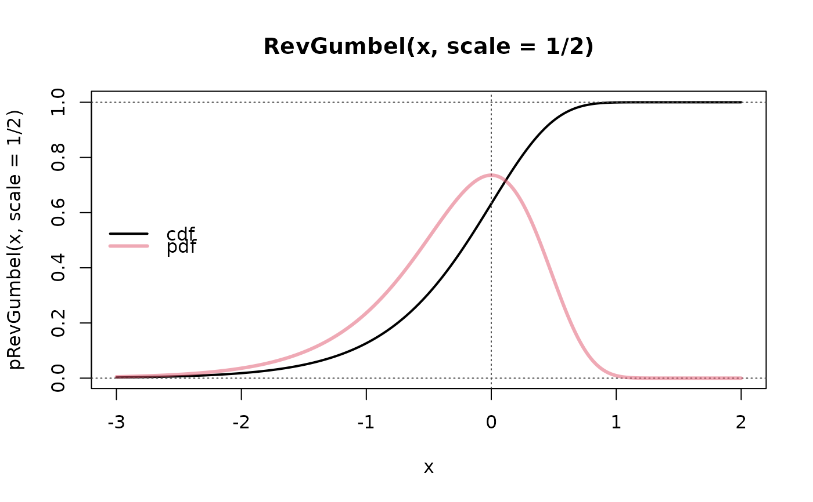

RevGumbel.RdDensity, distribution function, quantile function and random
generation for the “Reverse” Gumbel distribution with
parameters location and scale.
dRevGumbel (x, location = 0, scale = 1) pRevGumbel (q, location = 0, scale = 1) qRevGumbel (p, location = 0, scale = 1) rRevGumbel (n, location = 0, scale = 1) qRevGumbelExp(p)
| x, q | numeric vector of abscissa (or quantile) values at which to evaluate the density or distribution function. |
|---|---|
| p | numeric vector of probabilities at which to evaluate the quantile function. |
| location | location of the distribution |
| scale | scale (\(> 0\)) of the distribution. |
| n | number of random variates, i.e., |
a numeric vector, of the same length as x, q, or
p for the first three functions, and of length n for
rRevGumbel().
Werner Stahel; partly inspired by package VGAM. Martin Maechler for numeric cosmetic.
the Weibull distribution functions in R's stats package.
#> The median is: -0.1832565